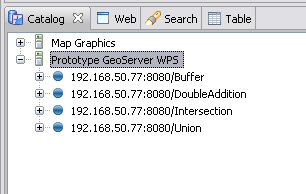
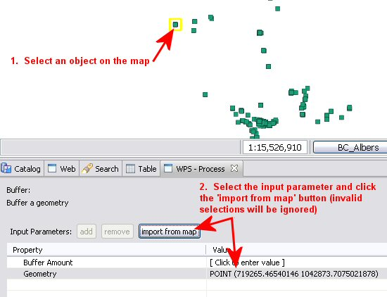
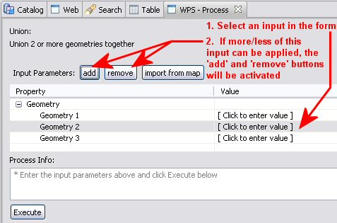

Using the WPS plugin¶
Once you have uDig up and running with the WPS plugin, it is fairly straight forward to use. The first step is to load a WPS server into the catalog.
Loading a WPS server into the Catalog¶
- Select File ‣ Import to open the Import Wizard window

- Select Web Processing Service (WPS) as the import source and click Next
- Enter the GetCapabilities URL for your WPS server and click Finish

- Your WPS server will now appear in the Catalog View. Expand it to get a list of processes it offers

Executing a Process¶
- To execute a process offered by your server, right-mouse-click on the process and select Operations ‣ Execute

- A WPS - Process View will open to display the process information and input parameters form (details shown in screenshot below)

- You can enter input parameters by manually typing them into the fields (use Well Known Text format for geometries). You can also import selected map objects if they fit the type expected for the input paramter:

- Press Execute when you have entered the required input parameters to send your request to the WPS server. Feedback will be provided in the Process Info console. For processes that return map data such as a geometry, a new Scratch Layer will be created in uDig to display the results. For output that is more textual, it will be displayed in the Process Info console.

Other Useful Functionality¶
- Some processes allow for variable number of input parameters. When an input parameter can have a variable number of values, it will be displayed on the form under an expanding category (see screenshot below). If you select one of these inputs, the add and remove buttons can be used to add and remove instances of this input to the form. The form will not allow you to add more than the maximum number of inputs, nor will it allow you to remove more than the minimum number of inputs (as described by the server’s describeProcess).
